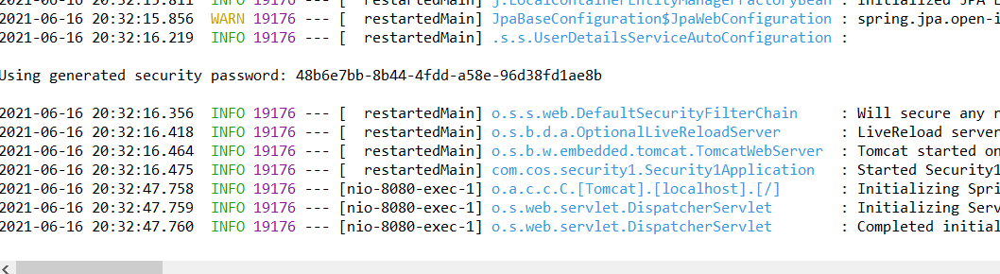

Spring Security 연습
기술 면접중 스프링 시큐리티에 관하여 질문을 받았고, 대답을 못했다. 돌아가는 모습은 내가 아는 모습은 비슷하지만, 지원을 해주는 것에서 많이 차이가 나는 것 같다. 편한기능이 많고, 알아두면 좋을 것 같다. 물론 어떻게 돌아가는지도 넣을 것이고, 자료는 유튜브 데어 프로그래밍님의 유튜브에서 가져왔고 설명이 잘되어 있는 것 같으니, 궁금할 땐 클릭해서 들어가 보자.(유튜브로 강의를 정말 잘해 놓으셨다.)
Spring Security 연습 1(2021-06-17)
처음 시작에서 Spring Security 의존주입을 하고 나서, yml파일을 생성하고 내용을 정리해준다. 브라우저에 접속하여 url을 적으면, 자동으로 스프링
시큐리티가 login페이지로 넘겨준다. 아이디는 기본 user이며, 비밀번호는 처음 서버를 실행하고 나서 콘솔에 사진처럼 나타나게된다. spring security
의존주입시 처음 들어가는 모든 요청 페이지는 막혀서 로그인을 해줘야하고 로그인이 되어야 접근이 가능하다는 점 유의하자. 또한 로그아웃도 지원하기 때문에,
다시 서버를 실행하였다면, 로그아웃 한번 해주고 실행하자.(비밀번호도 재실행 될 때마다 변경됨)

MustacheViewResolver
해당 유튜브 강의에서는 html을 이용하여 초반에 뷰를 작성하였다. 하지만 처음 의존 주입을 Mustache로 하였기 때문에, 해당 configuration 클래스를
생성하고, MustacheViewResolver자료형으로 참조변수를 만들어 사용할 수 있다.
MustacheViewResolver resolver = new MustacheViewResolver();
resolver.setCharset("UTF-8");
resolver.setContentType("text/html; charset=UTF-8");
resolver.setPrefix("classpath:/templates/");
resolver.setSuffix(".html");
이런식으로 만들어졌을 경우 .mustache로 설정되어 있던 suffix가 html로 경로 설정이 될 수 있도록 해준다.
Spring Security 연습 2(2021-06-18)
@EnableWebSecurity
웹 보안을 활성화하고, WebSecurityConfigurer을 상속받아 클래스를 설정할 때 자주 쓰인다. @Configuration 클래스에 @EnableWebSecurity을 추가하여
스프링 시큐리티를 설정할 클래스라고 정의한다.
WebSecurityConfigurer는 WebSecurityConfigurer 인스턴스를 편리하게 만들기 위하여 사용한다. 상속을 받게 되면, configure 메소드를 오버
라이딩 할 수 있고, 파라미터는 HttpSecurity 객체를 받게 된다.
authorizeRequests()메서드는 시큐리티 처리에 HttpServletRequest를 이용한다는 것을 의미하고,
antMatchers()는 특정 경로를 지정해줄 수 있는 메소드이다.
특정 경로 지정 후 사용 할 수 있는 인증 메서드
anonymous(): 인증되지 않은 사용자가 접근할 수 있습니다.
authenticated(): 인증된 사용자만 접근할 수 있습니다.
fullyAuthenticated(): 완전히 인증된 사용자만 접근할 수 있습니다(?)
hasRole() or hasAnyRole(): 특정 권한을 가지는 사용자만 접근할 수 있습니다.
hasAuthority() or hasAnyAuthority():특정 권한을 가지는 사용자만 접근할 수 있습니다.
hasIpAddress(): 특정 아이피 주소를 가지는 사용자만 접근할 수 있습니다.
access(): SpEL 표현식에 의한 결과에 따라 접근할 수 있습니다.
not(): 접근 제한 기능을 해제합니다.
permitAll() or denyAll(): 접근을 전부 허용하거나 제한합니다.
rememberMe(): 리멤버 기능을 통해 로그인한 사용자만 접근할 수 있습니다.
csrf().disable(): csrf(사용자의 의지와는 무관한 수정/삭제/등록 등의 행위를 요청하는 것을 의미한다.)를 하지 못하게 합니다.
출처: PostIT
또한 이후에,
.formLogin()
.loginPage("/loginForm")
.loginProcessingUrl("/login")
.defaultSuccessUrl("/");
이렇게 작성을 하게된다면, loginPage는 로그인 페이지가 어디인지, loginProcessingUrl은 login주소가 호출될 떄 시큐리티가 낚아채서 대신 로그인을 진행해주는 메소드이며,
.defaultSuccessUrl은 로그인 이후에 보여질 기본 페이지이며, 특정페이지로 접속하려 할 때 인증이 필요하여 로그인 페이지로 넘어갈 경우 그 로그인페이지에서 전에 config에서 설정해 놓은 기본 경로로
가지 않고 특정페이지가 보여지게 된다.
OAuth(2021-06-23추가)
OAuth2는 인증을 위한 표준 프로토콜이다.(정의)
해당 인증으로 타 사이트의 API를 이용할 수 있게 되는 것이다.
스프링 시큐리티 라이브러리중 OAuth라는 라이브러리가 있었다. 예전 프로젝트를 할 때 네이버나 카카오 로그인 API를 사용할 때 개인 키를 적어두고 이를 사용해서
토큰과 정보를 받아왔었다. 하지만, OAuth Client 라이브러리를 사용하니 그럴 필요없이 정해진 경로로 매핑을 해놓고, 키와 비밀번호를 property.yml에 저장해
놓으니, 굳이 토큰을 받아올 uri을 적고 가져오는 코드를 작성할 필요없이 로그인에 필요한 정보를 가져올 수 있었다.
예를 들어 구글 로그인 API를 사용할 경우 http://localhost:8080/login/oauth2/code/google 적었다고 하면, login/oauth2/code/은 고정이고 이후
google이나 facebook등은 해당 사이트에 맞게 적어주면 되었다.
페이코 개발자 센터 해당 링크에서 OAuth의 인증과정과 프로세스를 확인 할 수 있다.
OAuth서비스 코드를 작성할 때 DefaultOAuth2UserService를 상속받아 사용하면 되며, loadUser 메소드를 오버라이드하여 안에 내용을 채워주면 된다.
해당 유튜브 영상을 보며, 모르겠는 메소드를 찾아보았다.
userInfoEndpoint
OAuth2 로그인 성공 이후 사용자 정보를 가져올 때의 설정을 담당
userService
소셜 로그인 완료 후 후조치를 진행할 UserService 인터페이스의 구현체를 등록해줘야함
후속 조치로는 데이터를 받아오면 바로 가입시켜주든 회원 가입 페이지로 이동을 시키든 할 수 있고, 아무래도 예전 프로젝트에서 사용하는 코드들 보다 많이
유용하고 편리하였다. 하지만 그래도 부트를 사용하기전 스프링에서 로그인 API사용하기 위한 코드를 직접 만들었던 적이 있어서 그런지 돌아가는 구조를 이해하는데
쉬웠다.
JWT를 들어가기 전에(2021=06-24)
JWT를 들어가기 전에 알아둬야 할 것이 있다고 유튜브 강의에서 나와서 정리를 해보려 한다.
Session과 Cookie
우선 세션과 쿠키에 관하여 알아야 하는데, 이 부분은 전에 공부한 적이 있어서 어느정도 이해가 되어있는 상태로 보았다.
쉽게 설명하자면, 세션은 서버가 기억하는 것이고, 쿠키는 사용자의 브라우저에서 기억하는 것이라고 생각할 수 있다.
우선 처음 사용자가 요청을 보내면 서버는 해당 사용자의 세션객체를 만들어 사용자에게 Header에 쿠키를 만들어 보내준다.
그럼 다음 사용자는 이후에 요청을 한다면 쿠키의 세션 아이디를 서버로 보내고 서버는 이 사용자가 전에 요청을 보낸적이 있는지 체크하게 된다.
그런데, 서버에서 처리할 수 있는 요청이 50개인데 만약 70개의 요청이 들어온다면? 그럼 앞의 요청이 끝날 때까지 사용자는 기다려야 할 것이다. 이럴 경우,
서버를 여러개 두어 요청이 초과할 경우 다른 서버로 이 요청을 보내주면 되는데, 이것을 로드 밸런싱이라고 한다.
하지만 로드밸런싱을 할 경우 문제가 되는 부분이 있다. 바로 사용자는 처음 서버1에게 요청을 보내어 쿠키에 세션아이디를 가지고 있다고 가정하면, 로드 밸런싱으로
인하여 서버2에 요청이 갔을 경우 서버 2는 이 사용자를 처음 요청한 사용자로 볼 수 있다는 것이다.
이런 문제를 해결하기 위하여 강의에서는 4가지를 말하였는데
- 처음 요청을 로드 밸런싱으로 처리할 경우 다음 요청은 처음 요청한 곳으로 가게한다.
- 각 서버가 세션을 공유하는 방법
- 세션을 데이터 베이스에 저장하는 방법
- 세션을 램서버에 저장하고 램서버를 각 서버가 공유하는 방법
유튜브에서는 4번 방법이 제일 빠르다고 표현하였다. 자세한 부분은 접해볼 기회가 있다면 확인하고, 우선 이런거 까지만 있다정도로 확인하고 넘어가려 한다. 또한 jwt는 이 세션의 문제점을 보완하려고 나온 것이라고 한다.
CIA CIA란, - C: 기밀성(Confidentiality)의 약자로 주고 받는 데이터가 비밀스러워야 한다는 것이다.
- I: 무결성(Integrity)의 약자로, 데이터는 변하면 안된다.
- A: 가용성(Availability)의 약자로, 가용성은 항상 특정한 방식에 의해 사용 가능하여야 한다.
하지만, 이 부분에서 만약 A가 B에게 “안녕”이라는 데이터를 전달하려고 한다. 하지만 A와 B사이에 나쁜 C가 있어서, 만약 A가 보냈을 때, C가 그 내용을
탈취하여 내용을 변경하거나, 탈취하고 소멸시켜 버릴 경우 B는 데이터를 받지 못하고, 데이터를 받았다고 하더라도 그 내용이 변경되어 잘 못 전달될 가능성이 있다.
그렇기 때문에 A는 데이터를 어떠한 박스에 넣고 그걸 자물쇠로 잠궈서 해당 열쇠로만 열리게 만들었다고 하면 C는 그걸 탈취하더라도 내용을 볼 수가 없다.
하지만, 문제가 생긴다. 잘 보내졌다고 하더라도 B는 열쇠가 없어 확인을 하지 못할 것이다. 그렇다고 A가 열쇠를 같이 보낸다면? C가 탈취하면 위와 같은 상황이
반복된다. 이렇다면 기밀성, 무결성, 가용성이 모두 침해당하게 된다.
RSA
이렇기 때문에, 나온 방법이 RSA 암호화 방식이다. 이 방식은 공개키와 개인키로 이루어져 있고, 이런 방식을 symmetric-key algorithm 즉 대칭키 알고리즘이라고 한다.
위의 예시대로 A가 B에게 데이터를 전달하려고 할때, B가 공개해놓은 키로 암호화를 하여 A가 B에게 전송하면 C가 탈취하더라도 내용을 볼 수가 없다. 왜? 데이터는
B의 개인키로만 열 수 있기 때문에, 하지만 이럴 경우 C가 탈취해서 그냥 데이터를 소멸시켜버리고 새로운 데이터를 만들어 B에게 전송할 수도 있다. 이럴 경우,
B는 A가 만들줄 알고 데이터를 받을 것이고 내용을 확인 할 것이다.
그렇기 때문에, B의 공개키로 암호화된 데이터를 한번더 A의 개인키로 감싸는 것이다. 그렇다면, C가 탈취했다고 하더라도 A가 보낸 것을 알아도, 다시 A가 보낸 것처럼
만들 수 없다. 왜? A의 개인키를 모르기 때문에, 그렇다면, B는 데이터를 받았을 때 어떻게 확인하여야 할까. A가 미리 공개해둔 공개키로 열어 본다. 그렇다면, A가
보낸 것을 확인, 더불어 자신의 개인키로 내용을 확인할 수 있게 된다.
이렇게, CIA의 문제를 RSA로 해결하고 위의 사전지식을 가지고 JWT를 사용해보겠다.
전에 기사공부를 하다가 기밀성 무결성 가용성 RSA 등의 암호화 방식을 공부했지만, 예를 들어 설명하니 조금 새롭게 다가왔고 정립이 된 것 같다. 좋군